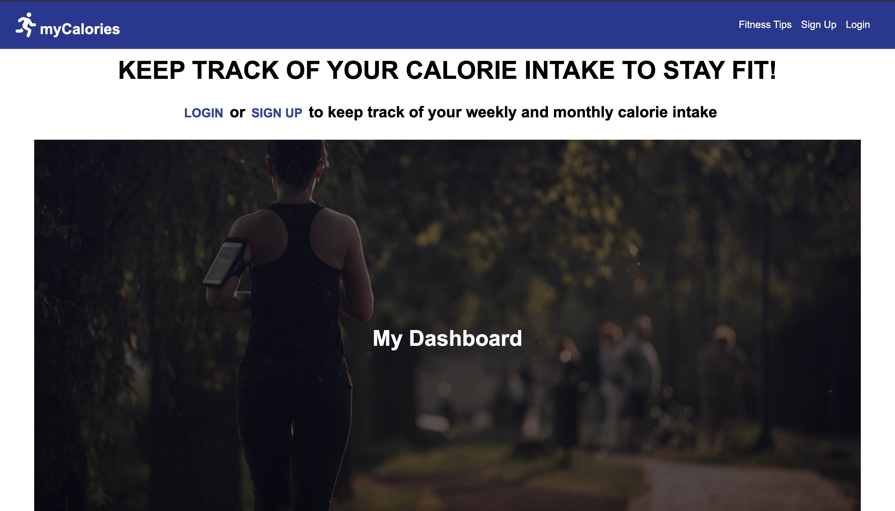

Bio
Hi, my name is Tyonek Thompson. I am a United States Marine Corps Veteran. I currently attend Lehigh Carbon Community College, studying Business Administration and Management, and I am currently studying Software Engineering at Thinkful. I have leadership experience, work well in a team atmosphere, and I am a fast learner. Using these skills I would want to apply them in a team environment with great programmers. I hold satisfaction in performing at a high level with anything I put my time into. Below is a selection of my recent projects.
Projects
NBA Trivia

How much do you know about the NBA? This trivia app built using HTML5, CSS, and jQuery will test your knowledge about the history of the NBA.
GitHubSide by Side
This full-stack app built using React, Redux, Express, JavaScript, PostgreSQL, HTML5, and CSS, allows a consumer to find the best deals of any product, from consumers finding the best deals! Deployed using Vercel and Heroku.
GitHubCalorie Tracker
This full-stack app built using React, Redux, Express, JavaScript, PostgreSQL, HTML5, and CSS, allows users to track their calorie intake to stay on a healthy lifestyle path. Deployed using Vercel and Heroku.
GitHub